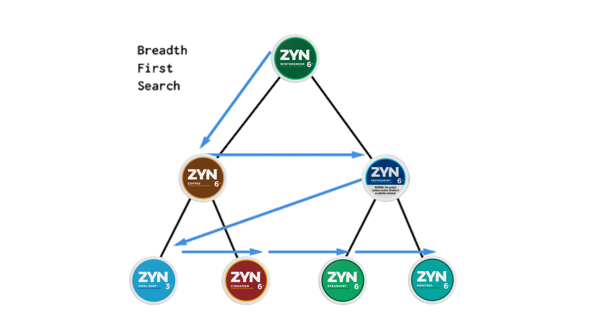
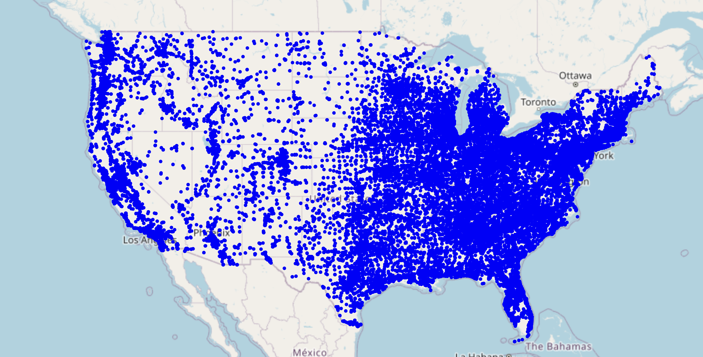
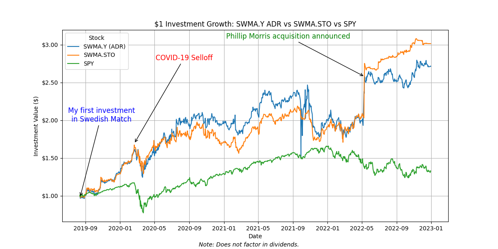

Making money off Zyn to fund my Zyn use with a breadth-first search algorithm.
I remember the first time I saw Zyn back in August 2019. A friend of mine had just returned from a trip to Colorado and took out a can. Back then, Zyn was far from mainstream—it had only reached East Coast shelves mere weeks ago. Intrigued, I threw in my first pouch and was pleasantly surprised. By the time I took out that first pouch, I had purchased $2,000 worth of shares in Swedish Match, the parent company of Zyn.
I was already familiar with Swedish Match and it’s popular snus product from my European friends in high school. I was aware of the research attesting to the safety of snus compared to other tobacco products. Sweden has the lowest smoking rate and tobacco-related mortality rate in the EU. 26% of men and 8% of women in Sweden use snus. I believed that a modern version of snus, nicotine pouches, could shift Americans away from cigarettes.
The competitive landscape also looked positive for Zyn. Negative public perception and lawsuits were mounting against the nicotine cultural icon of the day, Juul.
I soon discovered that in 2009, the FDA established the MRTP (Modified Risk Tobacco Product) process, which allows companies to submit applications to market their nicotine products as safer alternatives to cigarettes. The FDA had never issued a MRTP designation, but the research on snus’s safety was compelling, and Swedish Match was encouraged to continue communications with the FDA after a denied MRTP application for snus in 2014. If the FDA would ever grant an MRTP, it would be for Swedish Match, and I was bullish on this happening. Zyn is an even safer product than snus, containing fewer carcinogenic constituents—like polycyclic aromatic hydrocarbons (PAHs) and nitrosamines.
Zyn contains nicotine salts, just like Juul, which gives it that tobacco-like hit. I noticed that Zyn shared another crucial attribute with Juul: discretion. No spit, no smoke. I could see that Zyn would be an appealing product, but without the Juul cool factor that would attract too many underage users. Based on vibes, I believed Zyn was poised to dominate the adult segment that was currently drawn to Juul.
I thought I had a pretty good rationale for continued investment in Swedish Match, but I needed to validate my thesis rigorously. I pored over everything I could about the company. I read their public financial documents, analyst reports I raided from a UMich Ross Bloomberg terminal, research on safety, and FDA initiatives.
Swedish Match was a fairly consolidated company, and its stock price largely hinged on the success of Zyn in the United States. The company planned to divest its cigar business, focusing on snus, Zyn, chewing tobacco, and lighters, imagining a “smoke-free” future. Snus and nicotine pouches accounted for about half of revenue before the cigar divestment (Q3 2019). With a longstanding and misguided EU ban on snus still in effect, Zyn's growth potential was primarily concentrated in the U.S. market.
So I had a thesis that Swedish Match was a strong company that would benefit from shifting consumer preferences and regulatory perspectives, driven by the growth of Zyn in the United States. But I really wanted a quantitative KPI to confirm my beliefs.
Breadth-First Search Webscrape
While there were many factors that gave me confidence in the investment, the cornerstone of my analysis was my web-scraping tool.
Swedish Match reported the number of U.S. stores that carried Zyn in their investor kit. Initially sold only in Colorado, Swedish Match ramped up their U.S. sales efforts in 2016, initiating a pilot program in the West where oral tobacco use is more prevalent. The success of this program was driving a nationwide rollout in 2019.
I realized that Zyn.com had a store locator. Bingo! This was how I could measure Zyn’s real-time growth.
Having never coded in Python or done web scraping, I initially thought of using Beautiful Soup to scrape the store data. However, I found that stores could be retrieved by making a direct XHR request with query parameters.
url = "https://www.zyn.com/us/en/storelocator//GetStores/?lat={}&lng={}&flavors=&packings="The endpoint returned the 50 closest stores (including store name, address, latitude, and longitude) for a given input coordinate.
With a file mapping zip codes to their center coordinates, my algorithm went state-by-state. At first, I tried querying the coordinates of every zip code but found that many queries were redundant. I devised a breadth-first search strategy to minimize the number of requests as I was worried about rate limiting.
I tried building a convex hull around all the coordinates I had seen, but this approach didn’t work. Imagine if stores were arranged in a “C” shape and there was a store in the middle of the “C”. If my graph of queried locations drew a convex hull around the “C” arc, it would mislabel the middle of the “C” as searched. So my adaptation was to create a convex hull around each set of the 50 returned stores, which would be complete and accurate. I then merged that convex hull with a persistent graph for which the interior contained areas that had already been queried.
When I plotted my results, I realized there were still areas that my BFS did not reach. For a set of stores, the 50 closest stores to any of them could be already queried. So to make sure I explored the entire state and didn’t get stuck, I added zip code coordinates to the queue if the queue was empty (provided the zip code wasn’t contained within my seen graph already).
My strategy vastly reduced the number of requests compared to querying every zip code. For example, in Pennsylvania, there are 1,992 zip codes and 2,694 stores, but I only required 204 queries for the scrape.
BFS Algorithm
- Start with a single coordinate in state (from zip code file)
- Add coordinate to queue
- Pop first coordinate from queue
- Query API up to 10 times with the coordinate
- Add unseen stores (from the given state) to a list of seen stores
- Create a convex hull around all returned stores (including the query coordinate)
- Merge that convex hull with a persistent graph
- Add unqueried vertices of the graph to the queue
- If queue is empty, add a zip code to the queue (if it is not already within the graph)
- Repeat steps 2 onwards until there are no more unqueried graph vertices
I found that the Zyn store database was updated every two weeks, if not more often. I validated for consistency between timeframes. I visited local gas stations and convenience stores to see if the stores that carried Zyn matched up with the store locator results.
The store count metric was a clear measure of availability and retailer confidence in the product, and signaled consumer demand.
At the end of 2018, only 13,600 stores carried Zyn in the U.S. Stores went from 15,000 to 51,000 between Q1 and Q2 2019. Swedish Match was expanding rapidly, making market penetration estimates challenging for analysts. Before the Q3 announcements, I had finished my scraper and discovered 67,565 U.S. stores, showing another 16,565 stores started carrying Zyn (32% growth) since Q2. Estimates from SEB and Carnegie were 55,500 and 57,500, respectively, implying at most 6,500 new stores (13% more). My scrape occurred after the Q3 reporting period, but it was actually better to have real-time information on such staggering expansion. In their Q3 report, Swedish Match reported 62,000 stores, and the stock surged on the news of Zyn’s growth.
Swedish Match only provided the total store count, but my tool gave me the exact coordinates of every store, providing unique analytical abilities. I noted that the store density in the eastern United States exceeded that of the west, contradicting a concern raised by some analysts who had anticipated lower penetration in eastern markets.
See my interactive visualization
In preparation for Q4, I performed another scrape, revealing 71,972 stores. For comparison, SEB’s post-Q3 estimate for year-end 2019 was 65,000 (which was fewer stores than my Oct. 20 scrape).
Outcome
The stock climbed sharply over both quarters, and analysts were giddily surprised by the breakneck pace of Zyn's market penetration. I pitched my thesis and store count tool to a hedge fund that was impressed enough to bring me on as an intern. In October, Swedish Match was granted the first MRTP from the FDA for eight of its General’s snus products. Meanwhile, Juul’s consumer base dwindled. My thematic theses were playing out according to my expectations.
I plugged my store counts into a discounted cash flow model I built, using conservative estimates for volume per store based on previously reported numbers to estimate revenue and EBIT. My 12-month price target was 723.43 SEK. My DCF was dated Nov 10, 2019, and the current price (pre-stock split) was 448.00 SEK, so I had an implied upside of 61%. Analysts' targets ranged from 500 to 630 SEK. My DCF projected a much higher number than any analysts, and it more accurately reflected the realized ascension of the stock. Between 10/11/19 and 10/11/20, the stock returned 48%, not too short of my predicted upside. (I felt the stock was still undervalued.)
Philip Morris acquired Swedish Match in November 2022. From my initial investment until the stock was delisted, the stock tripled in value (201% return). My actual return on the original investment in the ADR (not including dividends) was 167% (annualized return of 31%).
